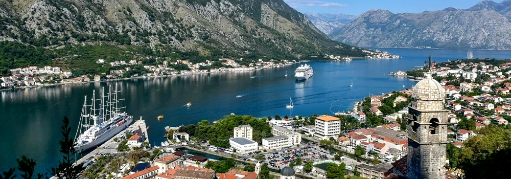

EuroTour
EuroTour Se você está indo para a Europa e se perguntando quais são as cidades mais bonitas da Europa, certamente você precisa dessa incrível lista, para você começar a se planejar e a se deslumbrar, antes mesmo de ir aos respectivos destinos. Todas as cidades e vilas da Europa são bonitas e cativantes à sua maneira. No entanto, existem alguns lugares que se destacam de outros. A melhor coisa da Europa é que é um continente extremamente diverso. Embora todos os países estejam muito próximos, todos são completamente diferentes em arquitetura, história, paisagens, climas e muito mais!
Principais pontos turísticos
Cidade de Zurique - Suiça
A Suíça é um país deslumbrante e cada cidade tem algo único e bonito para oferecer. De cadeias de montanhas a arquitetura antiga e águas azuis, há algo para ver em todos os lugares. No entanto, a cidade mais bonita da Suíça é certamente Zurique. As ruas limpas, a orla encantadora e os edifícios pré-medievais são fascinantes. Zurique é o distrito financeiro e bancário da Suíça e detém bilhões de dólares de cidadãos de todo o mundo. Você quase consegue sentir o dinheiro no ar. O que também é ótimo em Zurique é que fica bem perto de uma tonelada de pequenas aldeias com cordilheiras cativantes e corpos de água azuis. Sendo assim, é facilmente uma das cidades mais bonitas da Europa, e merece a sua visita!
Cidade de Santorini - Grécia
Santorini é uma ilha na Grécia com clima quente, país das maravilhas em tons de azul. Todas as fotos mais icônicas dos edifícios azuis e brancos da Grécia estão em Oia Santorini e, além desses edifícios, estão se estendendo por águas azuis. Este é o melhor local de romance na Europa e é o local ideal para lua de mel. Santorini deve ser sua primeira parada para uma escapadela romântica ou para desfrutar de umas férias quentes na praia na Europa. Por isso, não é uma surpresa que ela esteja nessa lista de cidades mais bonitas da Europa.
Cidade de Kotor - Montenegro
Os Bálcãs são uma parte bonita da Europa e acredite, muito ainda são ignorados, especialmente o belo país de Montenegro. Montenegro é um pequeno país localizado ao longo do Mar Adriático. É extremamente histórico e repleto de praias. Embora o país inteiro esteja cheio de belas cidades, uma das mais charmosas é Kotor que também é, facilmente, uma das cidades mais bonitas da Europa. Kotor é uma cidade pitoresca localizada dentro da Baía de Kotor e é cercada pelas enormes falésias calcárias do Monte Lovćen. A cidade é caracterizada por suas ruas sinuosas de paralelepípedos dentro das enormes muralhas fortificadas. Aqui você encontrará arquitetura medieval e muitas igrejas românicas. A cidade velha é histórica e bonita para explorar, mas a verdadeira beleza está nos lugares alto da cidade. A 40 minutos de caminhada, suba a montanha até o Castelo de San Giovanni e você terá vistas panorâmicas deslumbrantes de todo o Kotor e da baía. Há muito poucas vistas como esta, o que a torna uma das cidades mais bonitas da Europa, que deve estar na lista de todos.
Cidade de Estocolmo - Suécia
Os nórdicos são o epítome da beleza e, entre todos os belos países e cidades, temos Estocolmo de tirar o fôlego, na Suécia. Estocolmo é uma cidade acolhedora e calorosa, sem dúvida uma das cidades mais bonitas da Europa. As ruas são limpas, os prédios são arquitetonicamente brilhantes e há mágica no ar. Além disso, é uma das cidades mais coloridas do mundo, tornando-a obrigatória para quem deseja uma viagem romântica. Uma das melhores partes de Estocolmo é a Cidade Velha, Gamla Stan. É uma pequena área com alguns dos edifícios coloridos mais bonitos e vibrantes dos nórdicos. Aqui, mostramos por que os nórdicos são tão cobiçados e mostram toda a beleza de Estocolmo.
Cidade de Budapeste - Hungria
Budapeste está em quase todas as listas de cidades mais bonitas da Europa, e por boas razões. Devido à sua arquitetura e cenário deslumbrantes, Budapeste é frequentemente chamada de “Paris do Norte”. Budapeste é a capital da Hungria e está repleta de edifícios e locais exclusivos para admirar que são diferentes de qualquer outra cidade da Europa. O que torna Budapeste ainda mais especial é sua profunda história. A cidade foi atingida com força durante a Segunda Guerra Mundial, mas voltou dos tempos difíceis para se tornar a beleza que é hoje. Além disso, Budapeste está repleta de piscinas termais naturais.